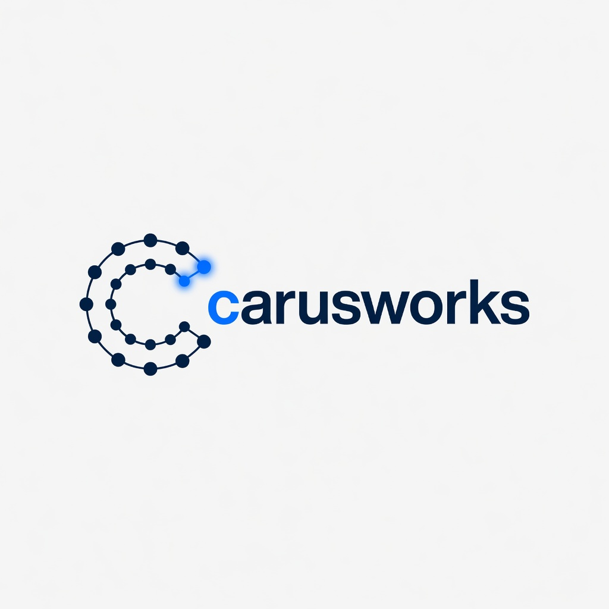
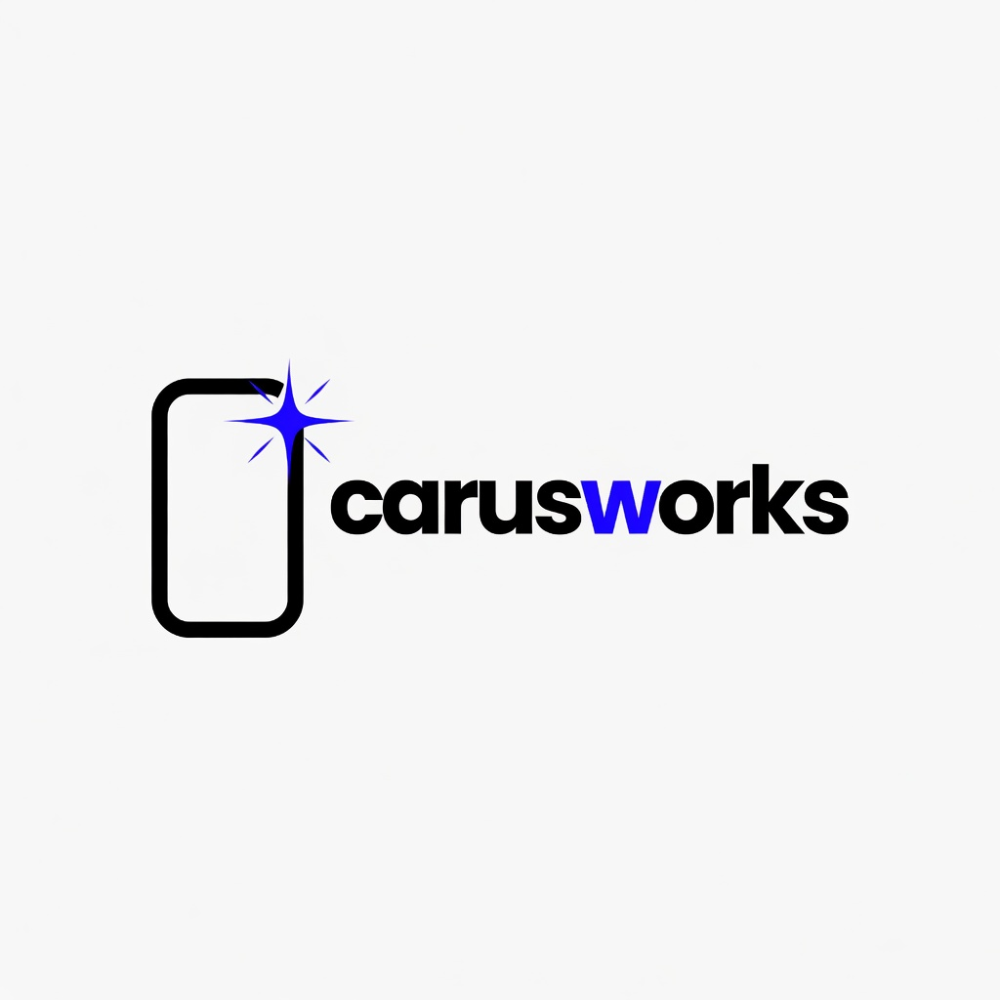
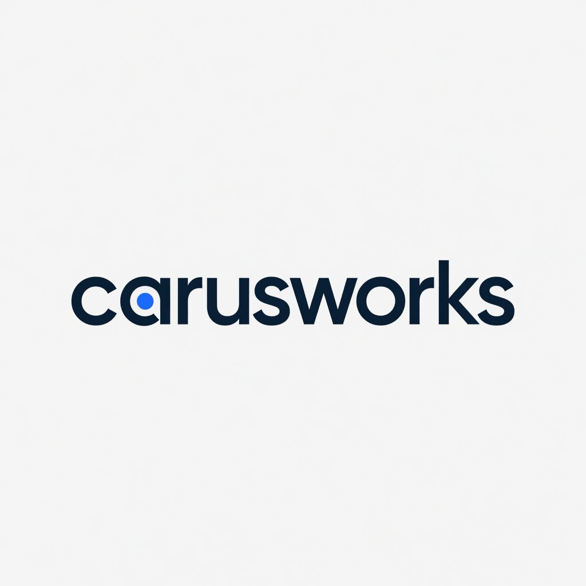
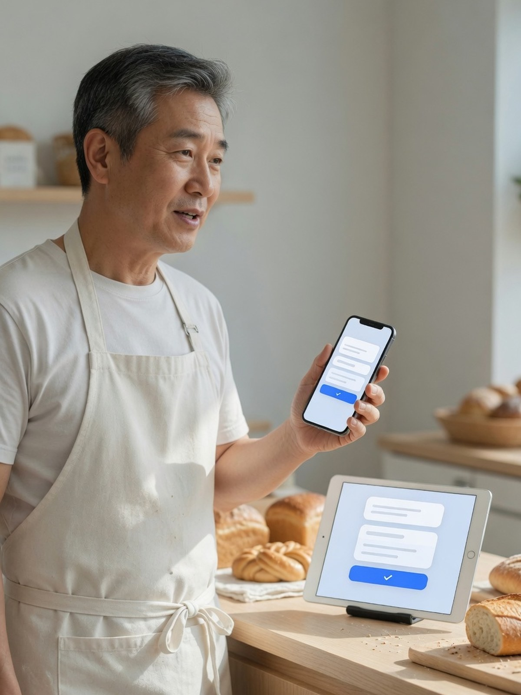
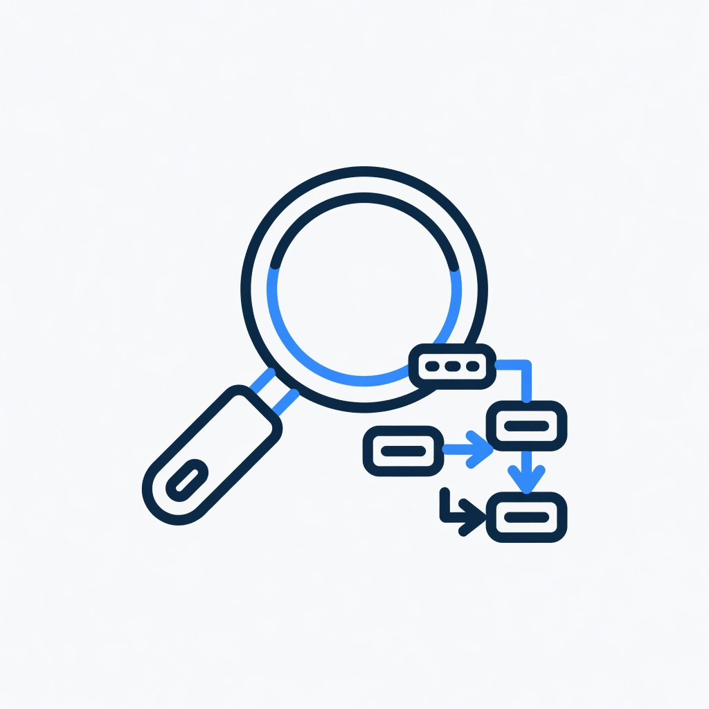
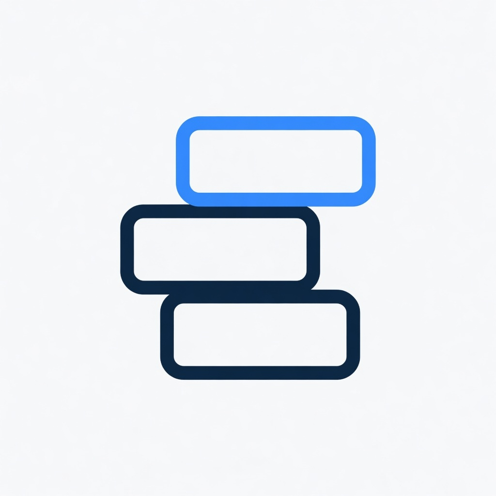
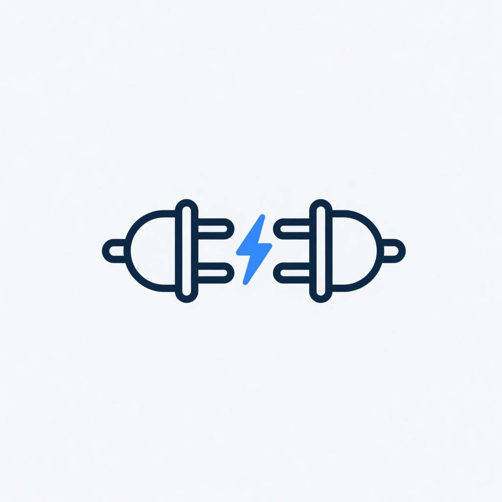
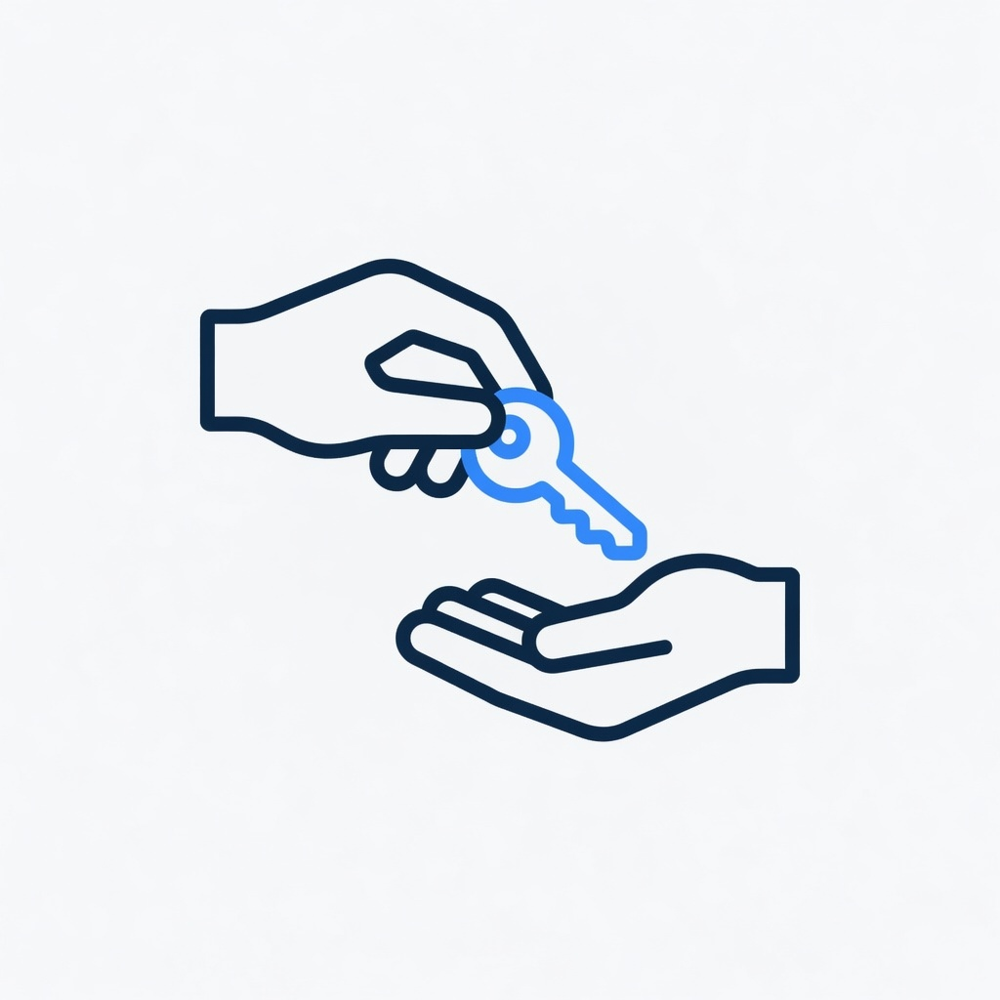

1. 로고 A안
노드 C · 1:1
로고 3안, 히어로 8초 루프, 카드 3장, 도입 아이콘 4종, OG 1장. 휴대폰 화면 목업은 여기에 없습니다.

노드 C · 1:1

채택 · 첫 화면 마크 · 1:1

워드마크 · 1:1
8초 무음 루프 · 1280×720. 창가에서 작업 카드를 확인하고 승인합니다. 스틸은 04-hero.jpg
3:4 · 1200×1600
3:4 · 1200×1600

3:4 · 1200×1600

1:1

1:1

1:1

1:1
1200×630 · 글자 없음. 공유 이미지는 헤드라인을 합성한 assets/brand/og.jpg